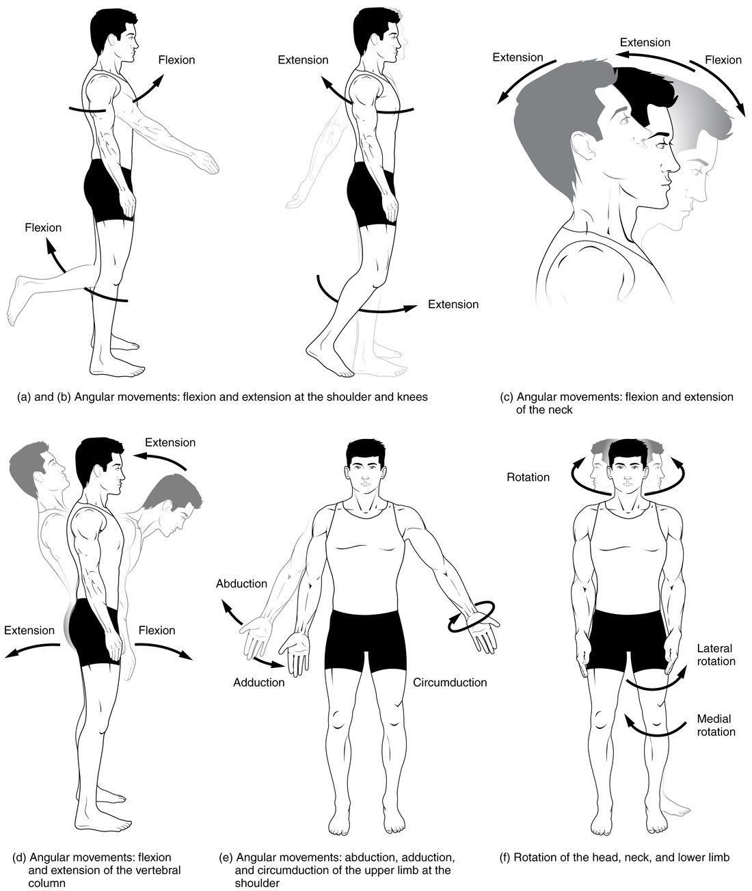

Movements at synovial joints
Movements are named from anatomical position by plane and direction.
Part 1 · Clinical hook
Why this matters
Six weeks after shoulder surgery, Mr. Chen, 58, sees his physical therapist. She measures how far his arm moves and writes: "flexion 110°, abduction 80°, lateral rotation 20°." Any clinician who reads the note knows exactly which way his arm moves well and which way it is still stiff, because each of those words names one direction from one starting posture.
Part 2 · Foundations
What this builds on
Part 3 · Prerequisite check
Quick check before you start
1. Which plane divides the body into right and left parts?
- Frontal plane
- Sagittal plane
- Transverse plane
Show the answer
A sagittal plane runs vertically from front to back and divides the body into right and left parts. The frontal plane divides front from back, and the transverse plane divides upper from lower.
- Frontal plane:
- Correct: Sagittal plane:
- Transverse plane:
2. Which type of synovial joint allows a bone to turn around its own long axis in a ring?
- Hinge joint
- Pivot joint
- Saddle joint
Show the answer
In a pivot joint, a rounded peg turns inside a ring of bone and ligament, so the bone turns around its long axis. A hinge swings in one plane, and a saddle joint swings in two planes.
- Hinge joint:
- Correct: Pivot joint:
- Saddle joint:
3. In anatomical position, which way do the palms face?
- Forward
- Backward
- Toward the thighs
Show the answer
In anatomical position you stand upright facing forward with your arms at your sides and your palms facing forward.
- Correct: Forward:
- Backward:
- Toward the thighs:
Part 4 · Anatomy panel
Anatomy

With labels hidden, select a box to reveal its label.
Part 5 · Causal chain
How it works, step by step
- You start in anatomical position: palm forward, and the radius lies parallel to the ulna.The forearm is supinated.
- The head of the radius turns inside the annular ligament at the proximal radioulnar joint.The shaft of the radius turns, and its lower end swings around the ulna at the distal radioulnar joint.
- The lower end of the radius moves around the ulna.The radius crosses over the ulna, which stays in place.
- The hand is joined to the radius at the radiocarpal joint, so it moves with the radius.The palm turns to face backward: the forearm is pronated, with no movement at the wrist.
Part 6 · Key ideas
Key ideas
- Flexion (flex- = bend) decreases the angle between two bones, or bends the trunk or neck forward. Extension increases the angle again, and hyperextension (hyper- = beyond) is extension past anatomical position. All three are measured from anatomical position and happen in the sagittal plane.
- Abduction (ab- = away from, duct- = lead) moves a limb away from the midline of the body, and adduction (ad- = toward) moves it back toward the midline. Both happen in the frontal plane. Bending the trunk or neck sideways is lateral flexion.
- Circumduction (circum- = around) moves the far end of a limb in a circle while the near end stays at the joint, so the limb sweeps out a cone. It is flexion, abduction, extension and adduction done one after another. Rotation turns a bone around its own long axis: medial rotation turns the front of the limb toward the midline, and lateral rotation turns it away.
- Special movements belong to single regions. Supination turns the forearm so the palm faces forward or up, and pronation turns it back or down. Protraction (pro- = forward, tract- = pull) moves a bone such as the jaw forward, and retraction pulls it back. Elevation moves a bone upward, as your shoulder blades rise in a shrug, and depression moves it down.
- Lateral excursion slides the jaw to one side. In superior rotation the shoulder blade turns so its socket tips upward as you raise your arm. Opposition brings the tip of the thumb across the palm to touch the tip of a finger, mainly at the saddle joint at the base of the thumb.
Part 7 · Core concept
Core concepts
Part 8 · Misconception
A common mistake
The wrong idea: Flexion means moving a body part forward.
What actually happens: Flexion means decreasing the angle between two bones in the sagittal plane, measured from anatomical position. At most joints that carries the part forward, but at the knee flexion carries the leg backward, toward the back of the thigh. Judge flexion by the angle, not by the direction of travel.
Part 9 · Retrieval check
Check yourself
Anything you miss goes into your review queue.
1. Which movement decreases the angle between two bones in the sagittal plane?
- Abduction
- Extension
- Flexion
- Rotation
Show the answer
Flexion is a sagittal-plane movement that makes the angle between two bones smaller, such as bending the elbow.
- Abduction: Abduction moves a limb away from the midline in the frontal plane.
- Extension: Extension is the opposite of flexion: it makes the angle larger again.
- Correct: Flexion: Correct. Flexion decreases the angle.
- Rotation: Rotation turns a bone around its own long axis in the transverse plane.
2. Name the pinned movement of the thigh.
- Lateral rotation
- Medial rotation
- Circumduction
- Abduction
Show the answer
The thigh turns on its long axis so that its front faces away from the midline. That is lateral rotation.
- Correct: Lateral rotation: Correct. The front of the limb turns outward.
- Medial rotation: Medial rotation turns the front of the limb toward the midline, the opposite way.
- Circumduction: Circumduction sweeps the limb in a cone; here the thigh only turns on its axis.
- Abduction: Abduction moves the whole limb away from the midline; it does not turn the limb on its long axis.
3. Name the pinned movement of the jaw.
- Elevation
- Lateral excursion
- Protraction
- Depression
Show the answer
Jutting the lower jaw forward is protraction of the mandible.
- Elevation: Elevation raises the mandible to close the mouth.
- Lateral excursion: Lateral excursion slides the jaw to one side.
- Correct: Protraction: Correct. Moving the jaw forward is protraction.
- Depression: Depression lowers the mandible to open the mouth.
4. A waiter carries a tray on his upturned palm. Which forearm movement turned his palm up from the palm-down position?
- Pronation
- Supination
- Dorsiflexion
- Lateral excursion
Show the answer
Turning the palm up (forward, in anatomical terms) is supination: the radius swings back to lie parallel with the ulna.
- Pronation: Pronation turns the palm down or backward, the opposite way.
- Correct: Supination: Correct. Palm up is supination.
- Dorsiflexion: Dorsiflexion is a movement of the foot at the ankle.
- Lateral excursion: Lateral excursion is sideways movement of the mandible.
5. In a rear-end car crash, the driver's head is thrown backward past its upright position, and the ligaments in the front of the neck are strained. Which movement caused the injury?
- Hyperflexion of the neck
- Lateral flexion of the neck
- Rotation of the neck
- Hyperextension of the neck
Show the answer
The head moved backward beyond anatomical position in the sagittal plane: hyperextension. It stretches the structures on the front of the neck.
- Hyperflexion of the neck: Hyperflexion is flexion beyond the normal range, bending the head forward.
- Lateral flexion of the neck: Lateral flexion tilts the head toward a shoulder, in the frontal plane.
- Rotation of the neck: Rotation turns the head side to side around the axis of the neck.
- Correct: Hyperextension of the neck: Correct. The head went backward past upright: hyperextension.
6. A person shrugs her shoulders up toward her ears. What movement do her scapulae make?
- Protraction
- Superior rotation
- Elevation
- Abduction
Show the answer
Moving a bone straight up is elevation. Shrugging elevates the scapulae.
- Protraction: Protraction moves the scapulae forward around the rib cage, as when you reach forward.
- Superior rotation: Superior rotation turns the scapula so the glenoid cavity tips up, as when the arm is raised overhead. A shrug lifts the whole scapula without turning it.
- Correct: Elevation: Correct. Shrugging is elevation.
- Abduction: Abduction describes a limb moving away from the midline, not the scapula moving up.
7. You touch the tip of your thumb to the tip of your little finger. What is this movement, and where does it mainly happen?
- Opposition, at the thumb's carpometacarpal joint
- Adduction, at the thumb's interphalangeal joint
- Flexion, at the radiocarpal joint
- Reposition, at the little finger's knuckle
Show the answer
Bringing the thumb tip across the palm to a fingertip is opposition. It happens mainly at the saddle-shaped carpometacarpal joint at the base of the thumb.
- Correct: Opposition, at the thumb's carpometacarpal joint: Correct. Opposition at the thumb's saddle joint.
- Adduction, at the thumb's interphalangeal joint: The thumb's interphalangeal joint is a hinge that only bends the tip; it cannot carry the thumb across the palm.
- Flexion, at the radiocarpal joint: Flexion at the wrist bends the whole hand forward; it does not bring the thumb to a finger.
- Reposition, at the little finger's knuckle: Reposition is the return of the thumb to its resting place, the opposite movement.
Part 10 · Summary
Summary
Movements are named from anatomical position by plane and direction. Flexion decreases the angle between bones in the sagittal plane and extension increases it; hyperextension goes past anatomical position. Abduction moves a limb away from the midline in the frontal plane and adduction back; lateral flexion bends the trunk or neck sideways. Medial and lateral rotation turn a bone on its long axis, and circumduction sweeps a limb in a cone. Special movements: supination and pronation (forearm), dorsiflexion and plantar flexion (ankle), inversion and eversion (foot), protraction and retraction, elevation and depression, lateral and medial excursion (jaw), superior and inferior rotation (scapula), and opposition and reposition (thumb).
Part 11 · Up next
What comes next
Part 12 · Connections